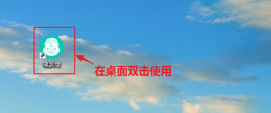
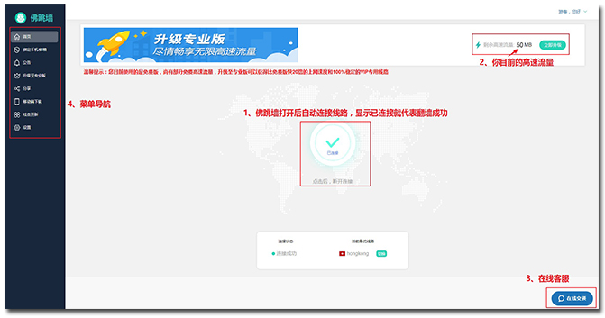
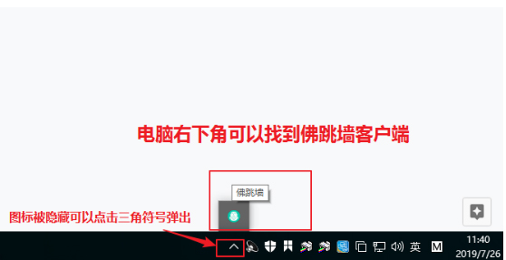
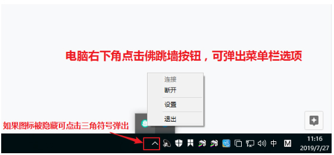
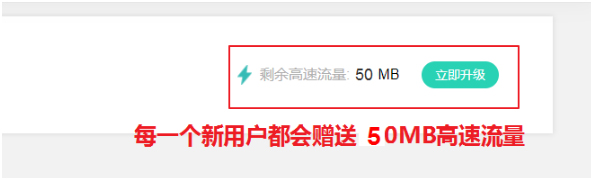
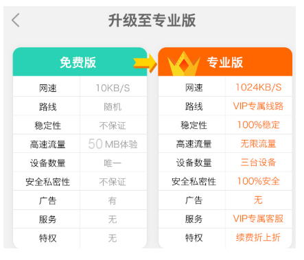
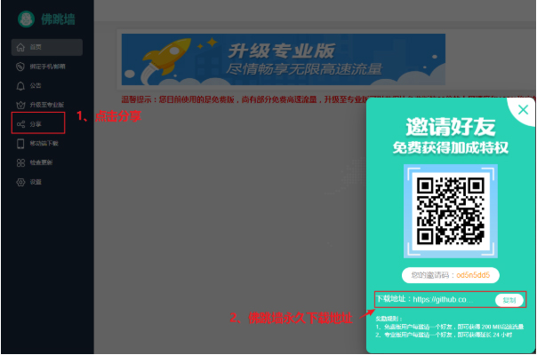

| 佛跳墙使用教程 |
| 您好，欢迎使用《佛跳墙》软件，如果您是第一次翻墙，请您花30秒钟浏览此文档，助您快速了解佛跳墙的使用方法。 |
| 1、在桌面找到《佛跳墙》双击使用 |
|  |
| 2、打开佛跳墙后，可以看到如下图所示的主界面，界面中的1234处，在下方说明 |
|  |
>1、每次打开后，佛跳墙都会自动连接线路，显示《已连接》就代表连接成功，这个时候就可以直接去访问您想访问的任何网站>2、新用户初次使用佛跳墙，都可获得50MB免费高速流量《如上图右上角位置》，在高速流量状态下，平均速度为1MB/秒。高速流量用完后，会进入低速线路，平均速度就只有10KB/秒，您可以选择升级专业版或参与活动来获得高速流量。在上午9点-下午19点都有客服在线，有任何问题都可以咨询，其他时间可以留言反馈，客服上班后会第一时间处理。左侧菜单导航栏，可以快速注册，查看公告，升级版本，分享和检查更新。 |
| 3、如果你在浏览器关闭了佛跳墙客户端，可以在《电脑桌面右下角》找到佛跳墙（如下图） |
|  |
| 需要注意，如下图所示： 关闭浏览器后，佛跳墙任然处于连接状态，如果需要退出佛跳墙，手动点击退出即可（如下图所示） 如果需要重新连接佛跳墙，在电脑桌面重新打开佛跳墙客户端即可自动连接 |
|  |
| 4、关于佛跳墙免费版和专业版，以及免费高速流量（如图所示） |
|  |
需要注意，如下图所示：
1，未升级专业版的用户都是属于免费版用户，免费版用户可以一直使用；2，免费版用户有50MB的免费高速流量可以体验，在高速流量状态下速度是1MB/秒；3，当高速流量用完后，就回到免费版低速线路，速度只有10KB/秒（在这个速度下，会出现卡顿，延迟，无法观看视频，浏览网页很慢）；4，如果您需要良好使用VPN，建议您升级为专业版，拥有无限的高速流量，平均翻墙速度1MB/秒，100%稳定，线路智能切换。（如下图） |
|  |
| 5、当您遗忘佛跳墙下载地址时，可以在佛跳墙左侧菜单栏点击分享，找到《佛跳墙》永久下载地址，如果分享给朋友下载，朋友注册账户时填写邀请码，还可以获得奖励。（如下图） |
|  |
|
感谢您的浏览，佛跳墙VPN介绍完毕，赶紧去使用吧，祝您翻墙愉快。
|